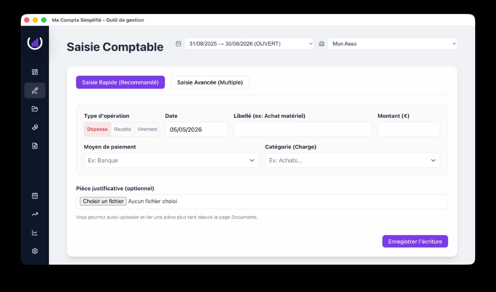

Saisir & suivre
Saisissez vos opérations, gardez une vue claire, et retrouvez rapidement l’information.
Une application desktop pensée pour les entreprises et associations en France : saisie, organisation, et export — sans complexité inutile.

Dernière version : v0.3.0-alpha. Voir toutes les releases.
Saisissez vos opérations, gardez une vue claire, et retrouvez rapidement l’information.
Organisez votre comptabilité avec des repères simples : périodes, journaux, pièces justificatives.
Générez des exports adaptés à votre usage (ex. partage avec l’expert‑comptable).
La distribution se fait via GitHub Releases. v0.3.0-alpha (10 mai 2026).